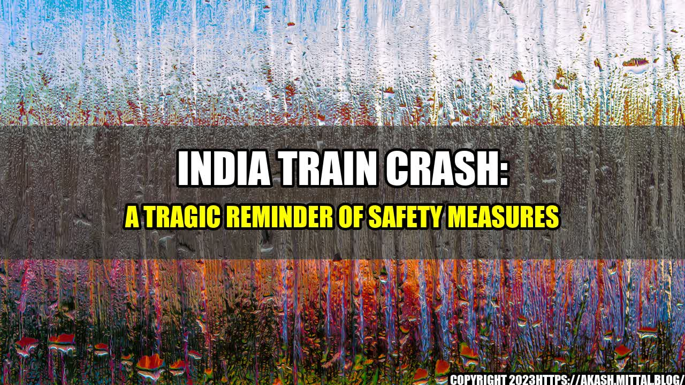

India Train Crash: A Tragic Reminder of Safety Measures

On June 22, 2021, one of India's deadliest train accidents occurred in the western state of Maharashtra, claiming 288 lives and injuring more than 300 passengers. The crash happened after heavy monsoon rains caused landslides, derailing the train's coaches and leaving many of its occupants trapped.
While the exact cause of the tragedy is still being investigated, this incident highlights the need for more stringent safety measures in India's transport sector.
Case Studies of Similar Train Accidents in India
The recent India train crash is just one of several accidents that have occurred in the country due to insufficient safety measures. Here are some examples:
- In 2017, 23 people were killed when 13 coaches of the Pukhrayan Express derailed in Uttar Pradesh.
- In 2016, over 140 people died and more than 200 were injured when an express train derailed in the northern state of Uttar Pradesh.
- In 2014, a train travelling from Bangalore to Chennai derailed, killing 25 people and injuring more than 100.
The Need for Better Safety Measures
The recurring train accidents in India indicate a failure to address safety concerns in the country's rail infrastructure. Here are some ways India can improve its transport sector:
- Investing in Technology: New technologies such as automated trains, sensors, and advanced signalling systems can help reduce human error and enhance safety. For instance, the introduction of blockchain-based safety solutions can help prevent derailments and other accidents by monitoring track conditions and signalling.
- Modernizing Infrastructure: With the rising demand for rail transport, modernizing India's rail infrastructure is crucial. The government needs to allocate more funds to upgrade existing railway tracks and build new ones, along with strengthening bridges, tunnels, and other vital structures.
- Training and Education: Proper training and education of the rail workforce are crucial to ensure safer operations. The government needs to invest in training programs that teach railway staff about emergency procedures and advanced safety practices.
Conclusion
The train accident in India serves as a wake-up call for better safety measures in the country's transport sector. It's high time India takes measures to modernize its rail infrastructure and invest in new technologies to ensure safer travel for its citizens.
References:
- https://www.bbc.com/news/world-asia-india-57526082
- https://www.nytimes.com/2021/06/26/world/asia/india-train-accident.html
- https://www.aljazeera.com/news/2021/6/28/india-train-crash-death-toll-rises-to-52
Hashtags:
- #IndiaTrainCrash
- #SafetyMeasures
- #RailInfrastructure
- #TransportSector
Category:
Transportation and Safety
Curated by Team Akash.Mittal.Blog
Share on Twitter Share on LinkedIn